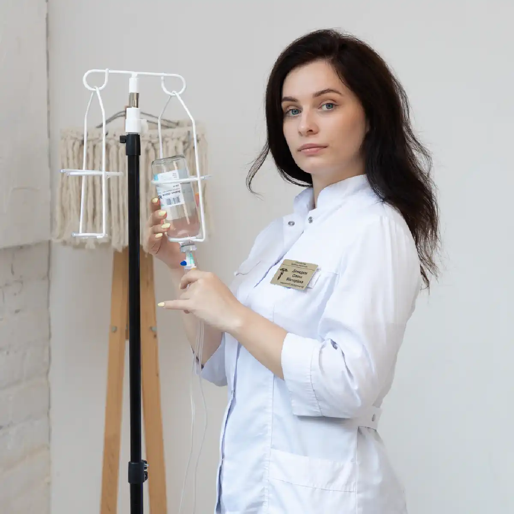

+38(068) 79 72 782
+38(068) 79 72 782Крапельниця від бупренорфіну у Харкові
Допомога за будь-якої абстиненції


Безкоштовна консультація, працюємо цілодобово 24/7
Допомога за будь-якої абстиненції

Дата написання: 22 вер. 2026 р.
Останнє оновлення: 4 жовт. 2026 р.
Бупренорфін належить до опіоїдів і використовується в медичній практиці, зокрема для лікування опіоїдної залежності. Однак немедичне вживання, самостійне збільшення дози, поєднання з алкоголем, бензодіазепінами або іншими речовинами, що пригнічують центральну нервову систему, може призвести до вираженої сонливості, порушення свідомості та пригнічення дихання. При проблемному вживанні може знадобитися лікування наркотичної залежності. Крапельниця після бупренорфіну може застосовуватися лише за медичними показаннями. Вона не є антидотом і не здатна миттєво «вивести» препарат з організму. При підозрі на передозування основне значення мають оцінка дихання, екстрена медична допомога та застосування налоксону за показаннями.
Крапельниця від наркотиків у Харкові після вживання бупренорфіну може призначатися лише після огляду пацієнта та оцінки його стану. Лікар уточнює дозу і час вживання препарату, наявність інших опіоїдів, алкоголю, бензодіазепінів та супутніх захворювань. Інфузійна терапія може використовуватися для корекції зневоднення, порушень водно-електролітного балансу або введення призначених симптоматичних препаратів. Склад та обсяг терапії визначаються індивідуально. Якщо у людини порушена свідомість або дихання, домашня крапельниця не є відповідним варіантом лікування — необхідна екстрена наркологічна допомога.
Звернутися за медичною допомогою слід при вираженій сонливості, незвичайній загальмованості, сплутаності свідомості, слабкості, запамороченні, нудоті або погіршенні загального стану після вживання бупренорфіну. Особливої уваги потребують ситуації, коли препарат приймався в невідомій дозі, використовувався не за призначенням лікаря або поєднувався з алкоголем, бензодіазепінами, іншими опіоїдами чи седативними речовинами. Якщо людину важко розбудити, дихання стає рідкісним, поверхневим або утрудненим, необхідна екстрена допомога. При стабільному стані може знадобитися консультація нарколога.
Після вживання бупренорфіну можуть спостерігатися сонливість, запаморочення, слабкість, нудота, підвищена пітливість та зниження концентрації уваги. При вираженій інтоксикації можливе пригнічення свідомості та дихання. Ризик тяжких ускладнень зростає при поєднанні бупренорфіну з іншими речовинами, що чинять пригнічувальну дію на центральну нервову систему. Тому перед проведенням крапельниці для детоксикації необхідно оцінити не лише скарги пацієнта, а й дихання, рівень свідомості, пульс, тиск та насичення крові киснем.
Крапельниця призначається не автоматично після факту вживання препарату, а за наявності конкретних медичних показань. Інфузійна терапія може розглядатися при зневодненні, порушеннях водного балансу, деяких проявах абстинентного синдрому або необхідності внутрішньовенного введення призначених лікарем препаратів. Якщо стан пацієнта стабільний і показань для інфузії немає, встановлення крапельниці може не знадобитися. Рішення про необхідність детоксикації від наркотиків приймає лікар після огляду.
Нарколог додому в Харкові може оцінити загальний стан пацієнта, рівень свідомості, дихання, пульс та артеріальний тиск, з’ясувати обставини вживання та визначити подальшу тактику. Особливо важливо повідомити лікарю, чи вживалися одночасно алкоголь, бензодіазепіни, метадон, фентаніл або інші опіоїди. За результатами огляду може бути рекомендоване спостереження вдома, симптоматичне лікування, детоксикація від наркотиків або госпіталізація. При ознаках передозування плановий виїзд нарколога не повинен затримувати виклик 103 або 112.
У стабільному стані та після медичної оцінки крапельниця від наркотиків вдома в окремих випадках може проводитися за показаннями. Домашній формат допустимий лише тоді, коли людина перебуває у свідомості, нормально дихає і лікар не виявляє ознак тяжкої інтоксикації або інших станів, що потребують стаціонарного спостереження. Якщо пацієнта важко розбудити, з’явилися судоми, виражена сплутаність свідомості або порушення дихання, потрібна екстрена допомога, а не звичайна крапельниця вдома.
Універсального складу «крапельниці від бупренорфіну» не існує. Лікування визначається виявленими порушеннями. За показаннями можуть застосовуватися інфузійні розчини для корекції дефіциту рідини та електролітних порушень, а також лікарські засоби для симптоматичної терапії. Призначення препаратів залежить від тиску, пульсу, стану серцево-судинної системи, функції інших органів та супутніх захворювань. Самостійно підбирати склад крапельниці від наркотиків після вживання опіоїдів небезпечно.
Детоксикація від наркотиків після бупренорфіну спрямована на безпечну стабілізацію стану та корекцію порушень, що виникають, а не на миттєве видалення всього препарату з організму. Перед початком терапії необхідно відрізнити відносно стабільний стан від передозування. При пригніченні дихання першочерговим завданням стає підтримання життєво важливих функцій. Якщо бупренорфін вживався регулярно і сформувалася залежність, детоксикація розглядається лише як один з етапів подальшого лікування наркоманії.
Легка сонливість і виражене пригнічення свідомості — не одне й те саме. Якщо людина відповідає на запитання, нормально дихає і стан не погіршується, лікар оцінює необхідність подальшого спостереження та терапії. Якщо людину складно розбудити, вона перестає нормально реагувати або дихання стає рідкісним і поверхневим, необхідно припускати тяжку опіоїдну інтоксикацію. Такому пацієнту не можна давати їжу, таблетки або велику кількість води через рот при порушеній свідомості. Необхідна допомога при наркотичній інтоксикації.
Найнебезпечнішим ускладненням опіоїдної інтоксикації є пригнічення дихання. При тяжкому стані людина починає дихати рідко та поверхнево, що призводить до недостатнього надходження кисню. Ризик зростає при неправильному вживанні бупренорфіну або поєднанні з бензодіазепінами, алкоголем та іншими депресантами центральної нервової системи. При порушенні дихання не можна чекати дії крапельниці. Необхідні негайна екстрена допомога та лікування опіоїдного передозування.
При передозуванні можливі виражена сонливість, різке зниження реакції на оточення, втрата свідомості та пригнічення дихання. У такій ситуації крапельниця при наркотичній інтоксикації не вирішує головної проблеми. Пріоритетом є відновлення адекватного дихання та застосування засобів для лікування опіоїдного передозування. Якщо людину неможливо розбудити або вона погано дихає, необхідно негайно викликати 103 або 112. Після стабілізації може знадобитися наркологічний стаціонар.
Налоксон застосовується для екстреного усунення небезпечної дії опіоїдів при передозуванні. Він може використовуватися і при передозуванні бупренорфіном. Через особливості дії бупренорфіну може знадобитися подальше медичне лікування, спостереження та підтримка дихання. Навіть якщо після налоксону людина прийшла до тями та почала краще дихати, медична оцінка все одно необхідна. За потреби пацієнта направляють до наркологічного стаціонару.
Поєднання бупренорфіну з алкоголем здатне посилювати пригнічувальну дію на центральну нервову систему. Це збільшує ризик глибокої сонливості, порушення свідомості та пригнічення дихання. Якщо після такого поєднання людина стала незвично сонливою, насилу прокидається або дихає рідко та поверхнево, необхідна термінова медична допомога. Якщо одночасно присутнє тривале вживання алкоголю, після стабілізації стану додатково може розглядатися виведення із запою вдома в Харкові або подальше лікування алкоголізму.
Спільне застосування опіоїдів і бензодіазепінів пов’язане з підвищеним ризиком вираженої седації та тяжкого пригнічення дихання. Водночас пацієнтам, які отримують бупренорфін за призначенням лікаря для лікування опіоїдної залежності, не слід самостійно припиняти терапію. Медикаментозну схему має коригувати фахівець. При сонливості з порушенням дихання потрібна термінова наркологічна допомога або виклик екстреної медичної служби.
Після тривалого прийому різка відміна бупренорфіну може супроводжуватися опіоїдним абстинентним синдромом. Можливі тривога, занепокоєння, порушення сну, біль у м’язах, пітливість, озноб, шлунково-кишкові симптоми та виражена тяга до опіоїдів. Крапельниця при абстинентному синдромі може використовуватися за показаннями для корекції зневоднення та окремих симптомів, однак вона не усуває всі механізми відміни та не замінює повноцінне лікування.
Повністю зняти ломку однією крапельницею вдається не завжди. Вираженість абстинентного синдрому залежить від тривалості вживання, дози препарату та стану організму. Інфузійна терапія може полегшити деякі прояви, пов’язані зі зневодненням або супутніми порушеннями, але подальша тактика визначається лікарем. Лікування ломки від бупренорфіну має проводитися після медичної оцінки, особливо якщо препарат використовувався тривалий час.
Стаціонарне лікування може знадобитися при тяжкому загальному стані, вираженій абстиненції, поєднаному вживанні кількох психоактивних речовин або наявності захворювань, що потребують постійного спостереження. Додатковими підставами для госпіталізації є порушення свідомості, дихання, виражена нестабільність артеріального тиску та інші небезпечні симптоми. У таких випадках лікування в наркологічному стаціонарі дозволяє контролювати стан пацієнта та своєчасно коригувати терапію.
Тривалість інфузійної терапії визначається обсягом призначених розчинів, станом пацієнта та завданнями лікування. Універсальної тривалості крапельниці для детоксикації не існує. У деяких випадках однієї інфузії достатньо для корекції конкретного порушення, в інших пацієнту потрібне подальше спостереження або комплексне лікування. Тривалість процедури та необхідність повторної терапії визначаються лікарем після огляду.
Час покращення залежить від причини поганого самопочуття. Якщо симптоми пов’язані зі зневодненням або окремими метаболічними порушеннями, стан може покращуватися в міру їх корекції. При опіоїдній абстиненції симптоми можуть зберігатися довше, тому одна процедура не гарантує повного зникнення ломки. Якщо самопочуття не покращується або з’являються нові симптоми, необхідна повторна консультація нарколога.
Інфузійна терапія впливає на окремі фізичні прояви стану пацієнта, але не усуває причини залежної поведінки, тягу до речовини та ризик повторного вживання. Якщо людина втрачає контроль над прийомом препарату, використовує його не за призначенням або продовжує вживати попри наслідки, потрібне комплексне лікування наркотичної залежності. Таке лікування може включати медичне спостереження, корекцію медикаментозної терапії, психотерапію при наркотичній залежності та подальшу реабілітацію.
Після стабілізації стану лікар оцінює характер вживання препарату та визначає подальшу терапію. Важливо враховувати, що бупренорфін сам є одним із препаратів для лікування опіоїдної залежності. Тому тривалий прийом призначеного лікарем препарату не означає, що пацієнту обов’язково необхідно повністю від нього відмовлятися. Якщо проблема полягає в немедичному вживанні або втраті контролю, складається індивідуальний план лікування залежності від бупренорфіну, а за потреби підключається реабілітація наркозалежних.
Анонімна наркологічна допомога в Харкові дозволяє отримати медичну оцінку після вживання бупренорфіну, обговорити симптоми відміни або проблемне вживання препарату. Для безпечного вибору лікування лікарю важливо повідомити реальну дозу, приблизний час останнього вживання та інформацію про інші речовини, які приймалися одночасно. Після огляду визначається відповідний формат допомоги — амбулаторне спостереження, домашнє лікування при стабільному стані або наркологічний стаціонар.
Вартість крапельниці від бупренорфіну в Харкові починається від 2499 грн.
Терміновий виклик нарколога в Харкові може знадобитися при розвитку абстинентного синдрому, погіршенні самопочуття після вживання або необхідності оцінити можливість лікування вдома. До приїзду лікаря слід контролювати стан свідомості та дихання пацієнта. Якщо людину неможливо розбудити, вона перестає нормально дихати або стан швидко погіршується, чекати планового приїзду нарколога не можна — необхідно негайно викликати 103 або 112.
Цілодобова наркологічна допомога в Харкові може знадобитися при погіршенні стану після вживання бупренорфіну, розвитку абстиненції або необхідності термінової медичної оцінки. При стабільному стані лікар може підібрати симптоматичну терапію, визначити показання до інфузійного лікування та скласти подальший план лікування наркотичної залежності. При втраті свідомості, вираженому пригніченні дихання або підозрі на передозування крапельниця не повинна затримувати екстрену допомогу, застосування налоксону за показаннями та госпіталізацію.
Телефон для консультації та виклику нарколога додому в Харкові: +38(050-021-69-57)

Статтю перевірено експертом
Робулець Ольга
Лікар-нарколог, ординатор
Можливо цікава стаття:
Соціофобія — що потрібно знати

Так, ми суворо дотримуємося повної конфіденційності на всіх етапах лікування. Інформація про пацієнта, діагноз та проходження терапії не передається третім особам. Звернення до нас не тягне за собою постановку на облік. Ви можете бути впевнені у безпеці та анонімності.
Програма лікування розробляється індивідуально після консультації з фахівцем. Враховуються вид залежності, її тривалість, фізичний та психологічний стан пацієнта. Такий підхід дозволяє підвищити ефективність терапії та знизити ризик зриву. Ми не використовуємо шаблонні рішення.
Так, ми супроводжуємо пацієнтів і після основного курсу лікування. Проводяться консультації, рекомендації щодо адаптації та профілактики рецидивів. За потреби можлива подальша психологічна підтримка. Це допомагає зберегти результат та повернутися до повноцінного життя.
Анонимно

Помогли при ломке
Анонимно
Хочу поблагодарить специалистов фирмы «Амбрела плюс» за реальную помощь в сложный период. Обратился в состоянии ломки, было тяжело и физически, и морально. Врачи отреагировали быстро, всё объяснили, поддерживали на каждом этапе. Состояние стабилизировали, стало значительно легче уже в первые часы. Спасибо за профессионализм и человеческое отношение.
Номер телефону:
+380 (68) 797 27 82
+380 (50) 021 69 57
Адресу наркологічного центра вашого міста уточнюйте за
телефоном
Працюємо: Київ, Одеса, Львів, Харків, Дніпро, Запоріжжя,
Черкасах, Чугуєві, Чорноморську, Кам'янському
Telegram: t.me/umbrellaplus
Графік работы: Цілодобово